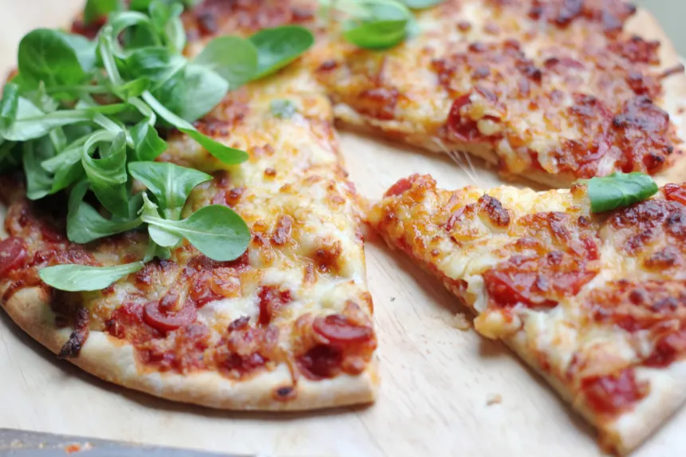

Pizza

Description
This is pulled from Food.com's
"Easy and Quick Homemade Pizza"
recipe. This quick, simple recipe should hit the spot when you're in a
rush but still want to enjoy the taste of a homemade, customizable pizza.
Ingredients
Dough
- 2 1/2 cups flour
- 1 tsp. salt
- 1 tsp. sugar
- 1 tbsp. fast rise yeast
- 1 cuo water (120 degrees)
- 1 tbsp. oil
Topping
- 1/4 cup tomato sauce
- 1 tsp. Italian seasoning
- 1/2 tsp. garlic powder
- 1/2 tsp. salt
- 1/8 tsp. pepper
- 1 1/2 cups pepperoni slices
- 1 cup shredded mozzarella cheese
- 1 cup shredded montery jack cheese
- 3 tbsp. grated parmesan cheese
Directions
- In a large bowl, mix first 4 ingredients
- Mix water and oil; add to flour mixture
- Turn on floured surface; knead for 2 minutes
- Place in a greased bowl; turning to grease top
- Cover and let rise for 20 minutes
- Punch down; place on 12in., greased pizza pan
- Pat into a circle
- Topping: Mix first 5 ingredients and spread over crust
- Put a few pepperoni slices on top of sauce
-
Sprinkle with 1/2 the mozzarella; 1/2 the montery jack, and 1/2 the
parmesan
- Put the rest of the pepperoni on
- Repeat the cheese layer
- Bake at 400 degrees for 20 minutes or until light brown